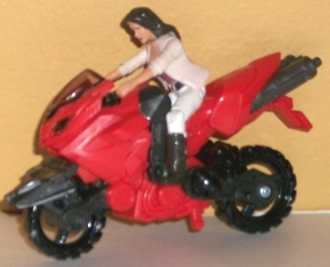
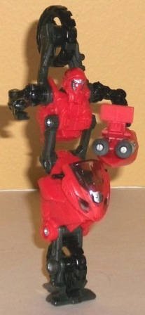
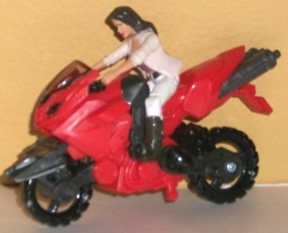
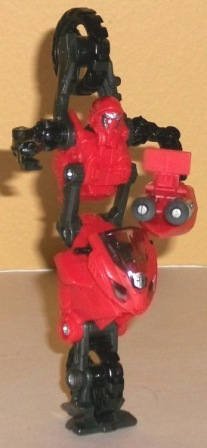
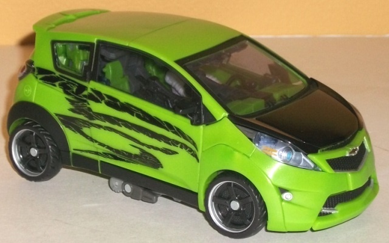
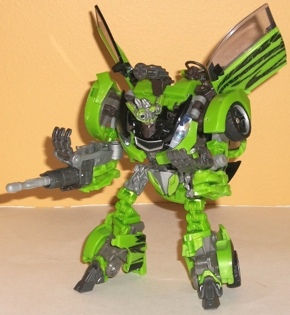

 
Allegiance : Autobot
Difficulty of Transformation : Easy
Color Scheme : Light red, gunmetal gray, black, and some transparent tinted plastic and silver
Individual Rating : 6.5
 Arcee
Arcee


Allegiance
: Autobot
Difficulty of Transformation
: Easy
Color Scheme
: Light red, gunmetal
gray, black, and some transparent tinted plastic and silver
Individual Rating
: 6.5
Arcee's vehicle mode
is a motorcycle-- unfortunately, it's not the same type of motorcycle Arcee
is in the movie, but rather,
Chromia's model
. (This obviously becomes
even more apparent in robot mode.) I don't know what the heck the reason
was for that stupid mixup, but quite frankly I find it pretty questionable
when Hasbro can't get their own characters' toys right. Anyways, The black/red
color scheme is hardly unique, but it works, and the gunmetal gray is a
nice color to complement the black. I do wish the red was just a touch
darker, however. There's a ton of great mold details on the figure, like
exhaust pipes, bolts, and whatnot, but unfortunately there's hardly any
paint detailing on Arcee-- not even her "tribal tats" or license plate.
Her proportions are generally pretty solid, except for her incredibly obvious
upper arms near the bottom of the cycle mode-- I mean, they're just THERE.
No real attempt to hide them at all. Any human Human Alliance figure is
the proper size to ride Arcee, but I wish there was sort of tab or slot
on the seat for the figures to plug into. Their hands don't fit over the
handlebars very snugly, so there's not much keeping them on her.
Arcee's robot mode shares
the same oddities that
deluxe class Chromia's
does, in that she doesn't really have any stomach, one wheel uni-leg, and
her right arm is normal while her left arm ends in a massive blaster. You
either like the look or you don't; it was obviously aimed for in the design,
so it's hardly a mistake. Personally, I'm not too fond of it, nor of the
big wheel sitting over her head. She has a widened-out section on the underside
of her wheel-foot to help her stand easier, but it still doesn't work all
that well-- the asymmetrical design of her arms still makes it a bit hard
to get her to balance correctly. I also don't know WHAT'S up with her head
design-- it doesn't look at all movie-accurate. Like some sort ninja mask
with an overly bulbous head or something-- I don't like it. As for articulation,
Arcee can move at the neck (at two points), the shoulders, the elbow on
the right arm, the part where her arm intersects with the gun on the left
arm (at two points), two points at her stomach, and at one point where
the wheel-foot connects to the front of the motorcycle that makes up her
uni-leg. Since most of that articulation is only one-way (back-and-forth),
plus her balance issues, it doesn't make her particularly posable. I also
am mildly peeved that her elbow on her gun-arm is molded into a position,
and a rather odd ninety-degrees position at that. Also, her shoulder joints
are connected via the wheel on her back, so when you move one of them the
other tends to move in the same direction a little too. Meh.
 Autobot
Skids
Autobot
Skids


Allegiance
: Autobot
Difficulty of Transformation
: Very
Hard
Color Scheme
: Moderately light green,
clear plastic, black, gray, and some silver, sky blue, dull metallic gold,
dark red, and light milky gray
Individual Rating
: 9.6
Skids' vehicle mode is
a Chevy Spark, and it's a pretty detailed version-- as you'd expect for
the $30 U.S. price. However, he is a bit small for what you'd expect from
a $30 toy, even considering the fact that he comes with Arcee. Transparent
headlights & taillights, black details on the front hood, doors, and
bumpers, clear windows with a detailed interior with seats and a steering
wheel, a SKIDS license plate-- very nice. I still wish there was something
to break up all that green on his roof, but that's a minor quibble. The
green and black go together quite well, and generally are broken up by
either other-- or the gray and silver-- enough where neither gets too stale
on any part of the vehicle. The only real "robot kibble" in this mode is
that, if you look at Skids from a side angle, you can see his hands and
the tips of his toes just poking out from under the bottom of the vehicle,
but that's really minor. As is needed with Human Alliance figures, both
car doors can open, and he's got two seats inside for the human figures
to sit in comfortably. (And as with the other human figures, Mikaela has
your standard range of motion at every major joint except the elbows.)
As for the robot mode,
THIS is the Skids I wanted at the
deluxe scale
(well, more or less-- I realize not all of it could've been fit into the
deluxe budget)! It is quite dififcult to transform (particularly back to
vehicle mode), though, so fair warning. Although he has some, this version
of Skids isn't held down by tons of kibble and tiny feet. His proportions
are bit overexaggerated, given his tiny head, strong shoulders, and rather
short feet, but that's part of his movie design. The rear part of his vehicle
mode folds out rather ingeniously into his legs, with the rear bumpers
forming heels, giving him some nice stable feet. I particularly love his
his car hood partially detaches and swings back, making his chest a very
detailed affair with a "fake" hood for part of it. It looks very close
to how it is in the movie, and is one of the highlights of the robot mode,
I think. He also has tons of mechanical details on all his robot parts,
though. His head has some very nice, accurate detailing in particular--
though of course, with Skids it's a design that you either love or hate.
(I like it quite a bit, having warmed up to it considerably after getting
used to it-- love the gold tooth, in particular.) You can also have Skids
talk smack to his pals by pushing down slightly on his "hair" piece, which
opens and closes his mouth. A pretty nice feature, there. His roof and
hood still do form a backpack, but it doesn't hang down nearly so far as
on the deluxe version, and actually forms a sort of stand for Mikaela (or
another human figure) to stand in and man the rotary cannon on his hunch
(there are pegs on the stand for the human figures to fit into so they
don't fall over). The human figure can also sit on either of the seats
on Skids' lower arms. There's no real purpose for them to sit on his smaller
left arm, but they can man his spring-loaded missile cannon on the front
of his larger right arm. (One minor downside-- you do have to take out
the missile when transforming Skids and re-insert it back in.) Both seats
can fold up and out of the way when not in use. One thing I'm not fond
of is Skids "door wings", however. Usually the usage of car doors in such
a manner helps to complement the robot mode, but the door wings are Mudflap's
thing. Using them here is a pretty obvious departure from his movie model.
He also has long skinny pieces of the rim of the car mode below the car
doors that I worry about snapping off eventually. As far as Skids' articulation
goes, it's excellent-- he can move at the neck, shoulders (at two points),
elbows (at two points), the wrist on his left arm, the base of the thumb
and the base of his fingers (the latter all as one piece) on his right
arm, and at the waist, hips (at two points), knees (at four points), and
a bit at the ankles-- so every major point is accounted for in some manner.
Human Alliance Skids
& Arcee sure is a package with some big contrasts between its figures.
Arcee has an okay vehicle mode, but her robot mode is awful and almost
bereft of paint apps. Meanwhile Skids is packed with tons of both mold
and paint details and features in robot mode, and unlike other versions
of him, almost kibble-free. Skids may be a bit small for the price, but
even with that and Arcee being a bit of a stinker I'd highly recommend
this set. Human Alliance Skids is just too great a figure not to miss,
and easily my most-recommended version of him.
Review by Beastbot